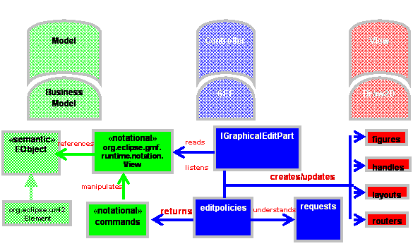

Developer
Guide to Diagram Runtime Framework
Contents
Figure I: GEF Model View
Controller Architecture
Figure II: GMF Model View
Controller
Figure III Core notation
meta-model:
This guide is meant as an initial introduction to
developers interested in creating Eclipse based graphical editor that are based
on an EMF model. GMF is top level
platform that is meant to bridge the tools projects of GEF and EMF.
GMF is a platform upon which graphical editors can depend
upon to gain a rich initial feature set and inoperability between EMF and
GEF. It is designed to eliminate the
need for the client to manage diagram persistence and lets the client focus on
managing their business logic model in the editor.
This guide won’t cover the generative aspects of the GMF
project. These capabilities are part of
the GMF SDK and can be referenced in a separate guide.
[back to top]
Pre-requisites
The initial requirements for a client developing on top of
GMF are as follows:
1.
At least an introductory level of knowledge of the GEF
and EMF tools projects which GMF is built upon.
Recommendation is to familiarize oneself with some on the online
documentation available for those projects.
2.
A semantic model is defined in EMF that represents the
data persistence model for the Editor.
i.e. the
Editor is editing the data stored in the semantic model.
·
Java (J2SE)
o
“Java Technology”
·
Eclipse
o
“Eclipse Platform Technical Overview”, by Object Technology
International Inc.
o
“Notes on Eclipse Plug-in Architecture”, by Azad Bolour, Bolour
Computing
o
“How to Use the Eclipse API”, by Jin des Rivieres, OTI
·
EMF
o
“Using EMF”, by Catherine Griffin, IBM
·
GEF
Overview
What is the value statement that GMF can provide over and
above a base GEF editor that links to EMF? There are usually 2 aspects to the
data stored in a graphical editor. There
is the diagramming data that persists the views or notation that is displayed
in the editor, and also the semantic data that the user is editing. From the user’s point of view, the two are
synonymous – the view is simply that, a window into the semantic data. However, from the editors standpoint there is
an important distinction between the notation and semantic. If the data isn’t separated properly this
severely limits the flexibility to display the semantic data in different contexts. Also, it can “blur” the data that is
essential to the business logic by needlessly weighing it down with data for
displaying the shape.
GMF addresses this by providing a logical persistence
model for GEF through the presentation layer.
If defined a notation meta-model in EMF that is generic and logically
separated from the semantic model persistence.
This allows multiple clients of GMF to have diagram interoperability
through a compatible and consistent notation format. Additional, since the notation is generic is
allows for management of the notation data to be encapsulated from the client
letting them focus their development efforts on the business logic. As well, the separation of notation and
semantic lets the client define multiple notations (shapes) for the same
semantic element. Perhaps the semantic
element should be visualized different depending on a context?
Figure I: GEF Model View Controller Architecture
[back to top]
Figure II: GMF Model View Controller
Architecture with addition of 2 tier model layer to
support generic notation meta-model

[back to top]
Since GMF is designed as a platform for different domain
editors to be built on, it needs a robust extensibility solution that will
allow for clients to extend off of other GMF clients and allow their
construction to be scalable through the plug-in architecture. The extensibility of GMF is allows for
on-demand loading of client components using the Eclipse extension point
mechanism and a GMF based Service-Provider infrastructure.
Aside from the architectural benefits to the platform,
there is a rich set of features that clients can optionally include in their
editor or they would inherit with little overhead. There is a special attention given to
usability in the diagram editor and a service for providing diagram assistants
that can appear as pop-ups or connection handles on the shape to assist in
creating elements using a context to guide them. More advanced geometry capabilities are also
included through a generic geometric shapes feature and support for SVG display
and export.
Example of geometric shapes:
When building domain specific shapes, it is useful to have
proper building blocks to construct them.
Constructs such as containment, list compartments, automatic
synchronization of notation to semantic are built into the platform to make
construction of a new shapes as ubiquitous as possible.
Example Logic circuit:
If we consider the logic circuit in the example we provide
as part of the SDK, this has complex behavior for containment, creation of the
terminals and color display. Using the
GMF infrastructure, the shape was constructed using a shape compartment for
containment and the terminals are created using a border shape infrastructure
to avoid having to construct these concepts from first principles.
Notation meta-model
The unifying force of GMF is the notation meta-model which
provides the concrete link between the EMF and GEF. It is the scaffolding around which GMF
diagram capability is built. The most
important aspect about the notation meta-model is that it is completely domain
independent. By having it be generic
across domains, this allows the engine to behave in a common way and provide a
common feature set that can be absorbed into those domains. The only link to the semantic model is a
reference stored on the View element in the hierarchy. The GMF editparts always navigate to the
semantic model through this reference.
Figure III Core notation meta-model:
The following is the core hierarchy of the notation
meta-model. There are styles and
enumerations not displayed.
There are 4 main hierarchies that make up the notation
meta-model.
·
View which is the main container that defines a
shape. There are 3 subclasses of view
that make up the major components of a diagram.
Of course the Diagram itself is the main container for all the
shapes. Then the Diagram element
contains Nodes (shapes) and Edges (connections) that connect the Nodes on the
diagram together.
·
Style: Styles are owned by View. They represents the properties of a View that
need to be persisted in order to properly display the shape. Typical values with-in the Style hierarchy
are for storing color, font, geometry information etc.
·
LayoutConstraint: This
is the hierarchy that defines the position of a Node in the diagram. Most often this will be a Bounds object
defining a size and position. The
hierarchy is flexible to define different kinds of positioning information such
as a Ratio that represents area allow for a subcompartment within a container
relative to it’s children.
·
Bendpoints: Similar to
layout constraint except it has a multiplicity on the Edge view, the bendpoints
are the points that constraint the Edge on the diagram.
The notation meta-model has been designed with a number of
conscious benefits in mind for the graphical editor.
1.
Customized for team support. Often when multiple team members are working
on the same resource and then check-in or deliver their work at the same time a
merge conflict can arise. The notation
meta-model is designed to minimize these merge conflicts through the separation
of styles into granular properties that can be merge independently.
2.
Customized for GEF (relative bendpoints, layout
constraints). Since GMF is meant to be a
bridge between EMF and GEF it makes to incorporate some GEF concepts into the
persistence model and treat them as first class citizens. This is the case with the relative bendpoints
that are using to store the connection edge points. In other editors, these bendpoints are
usually an absolute (x,y) value. GEF stores these values internally as two points
that are a relative value to an anchor on the source and on the target.
3.
Though the meta-model model is generic it doesn’t mean
that it has to remain static as well.
Through the style hierarchy it is possible to extent the notation
meta-model to store domain specific properties that individual editors may
need. Additionally, this hierarchy
allows the notation meta-model to evolve in the future as new feature are added
without breaking backward / forward compatibility.
[back to top]
Extensibility
The extensibility of GMF is an area where the platform
differs greatly from the GEF mechanism for integrating a domain editor. We will consider the general methods for
extending each infrastructure independently.
Extending GEF:
1.
Classic Java extensibility – inheritance, aggregation.
a. Issues:
static, overrides force knowledge of other components, plug-in loading.
2.
Limited hooks – main entry point is through
EditPartFactory subclasses installed by the Viewer.
3.
No separation of semantic vs. notation.
Extending GMF:
·
Utilizes GEF extensibility then adds additional
extensions points inside EditPart creation itself (EditPolicies,
Decorations). By delegating to the
Service, then the service can manage multiple providers and dynamic contributions
based on runtime criteria.

Services
A set of services with-in the GMF diagram plug-ins provide this extensibility for the platform. They are more or less consistent in their
usage but have some differences to account for their functionality. Notable common denominators:
3.1 Follows
Eclipse extensibility paradigm
3.1.1
Uses extension point/extension concept
3.1.2
Eclipse PDE can be used to create plug-in
3.2 Service
infrastructure support for dynamic providers, overrides of existing providers.
3.3 Support for on-demand loading – specify providers in XML.
3.4 Allows
any type of override without introducing any direct domain specific dependency
in core services.

View
Service:
ViewService is responsible for constructing the notation
view elements that are persisted to represent the diagram. A typical provider returns a factory class
that would create a notation view, set it’s styles and layout constraint as
appropriate. Next it would add
containment to the view by recursively calling the ViewService with a hint that
is used by the service to determine another provider and get the factory for
it.
1.
View providers create View Factory objects either by:
1. Creation
methods: creates new notational elements and returns the View notation element
to it. Hints include:
1. The
view kind (org.eclipse.gmf.runtime.notation.*): Node, Edge, Diagram
2. The
semantic reference (EObject)
3. The
factory hint (String)
4. The
container view (View)
5. The
index in parent collection
6. The
preference store containing default value overrides.
6
Each created view factory object subclasses from one of
3 abstract classes for creating Nodes, Edges or Diagram:

EditPart
Service:
EditPart Service is similar to the View Service except
that a provider will return the EditPart class that is the controller for the
notation view and semantic element.
1.
An Editpart provider creates
an EditPart for a given model element.
2.
Providers implement the IEditPartProvider with the
following method:
a. EditPart createGraphicEditPart(View
view)
3.
Providers can provide new editparts for new or existing
model element types.
4.
Providers should avoid providing new editparts where
the intent is just to customize the set of editpolicies (this can be done more
efficiently using the EditPolicy service)
EditPolicy
Service:
EditPolicy Service is an important
extensibility point since it allows clients to install their own editpolicies
on existing EditParts without overriding the EditPart itself. Each EditPart when it is created in GMF will
call the EditPolicyService on activation to determine if any clients are
contributing to their set of EditPolicies.
·
An Editpolicy provider
creates EditPolicies for a given editpart.
·
Providers implement the IEditPolicyProvider with
the following method:
o void
createEditPolicies(EditPart
editpart)
·
The service gives all interested providers a
chance to create editpolicies for the given editpart in order of priority from
lowest to highest.
·
Overriding an editpolicy
is done by assigning a new one in the same role.
·
Assigning ‘null’ to an editpolicy role is
equivalent to removing that role behavior.
·
The service is very useful for adding/removing
behavior without having to subclass targeted editparts.
Palette Service:
The Palette Service is the entry point to define a custom
palette for a domain editor with a set of creation tools organized into a
drawer or stacks. The concept of a
Service is useful here if there are multiple contributors to a domain editor
and each wants to make individual contributions to the palette without
depending on each other.
9
Palette providers contribute to the palette of a given
editor with a given content
10 Providers
implement the IPaletteProvider with the following method:
10.1
void contributeToPalette(IEditorPart editor, Object content, PaletteRoot root)
11 Palette
providers are encouraged to utilize the DefaultPaletteProvider, since all the
contributions could be described in the XML extension.
12 Palette
providers can contribute:
12.1
New Palette Drawers
12.2
New Palette Groups
12.3
New Palette Separators
12.4
New Palette Tool Items in drawers/groups.
12.5
New Palette Template Items in drawers/groups

Decoration Service:
The DecorationService is designed as a simple way to
annotate an existing shape without knowledge of the implementation of that
shape. It allows for an acetate image on
top of a shape at a particular location.
A decoration acetate can adorn any shape on the diagram based on a
certain condition since it is a layer above the shape it can cross EditPart
hierarchies. An example could be a image
on top of shapes indicating whether or not the corresponding resource has been
checked out of source control or not.
6
Decoration providers creates
decorations for a given adapter.
7
Providers implement the IDecorationProvider with the
following method:
7.1 void createDecorators(IDecoratorTarget
decoratorTarget)
8
The IDecoratorTarget api lets the client install a
custom Decoration or an image to a pre-defined location on the shape.
9
The service could be used by any client that needs to
decorate a shape on the diagram with-out having any dependency to GEF.

Layout Service:
The Layout Service is essentially a hook into the arrange
action on the toolbar and context menu.
This action will arrange the shapes on the diagram automatically in a
more organized and hopefully esthetically pleasing manner. However, layout itself is very difficult to
do generically and domain specific editors may wish to override the default
layout to do a custom layout more suited for the domain.
1.
Layout providers creates a Runnable object that will
execute a layout for a given layout type.
1. Providers
implement the ILayoutNodesProvider with the following method:
1.
public Runnable layoutNodes( List layoutNodes, boolean offsetFromBoundingBox,
IAdaptable layoutHint);
The List is a list of Node shapes to be laid-out on
the diagram surface.
The boolean
offsetFromBoundingBox indicates if the layout is to
be kept with-in the relative bounding box of the existing node shapes.
The layoutHint is an adaptable
that usually adapts to String. It tells
the provider what kind of layout is desired.

Interactions
A fundamental use case in a graphical editing framework is
how elements get created. In this
section we will explore the differences in how an element gets created in the
GEF framework versus the GMF framework using UML interaction diagrams. This will help clarify some of the basic
architectural differences where GMF has differentiated from GEF to achieve
extensibility and separation of concerns (semantic vs. notation).
Creation of an element in GEF
In GEF since there is no concerns about the separate of
notation and semantic they follow the pattern of a request which asks a factory
for the element to create on mouse move and then on mouse click adds the
created element to the target container.
1.
Creation tool mouse move on diagram surface
2.
Creation tool mouse click on diagram surface
The cached object created in the mouse move operation
is added to the container in the creation command execution which triggers
through events the creation of the corresponding EditPart and figure
containment hierarchies.

Creation of an element in GMF
5
Creation tool mouse move on diagram surface
The interaction is similar to the GEF interaction
except for some subtle differences. The
request is handled by the GMF defined CreationEditPolicy which will aggregate a
semantic creation command and a notation creation command and return it. Also, it is notable that the commands don’t
create the orphaned element before execution occurs by calling a factory. This is important in order to properly (and
generically) handle undo / redo which are managed through the command
infrastructure.
6
Creation tool mouse click on diagram surface
We will look at the GMF creation in 2 phases. First the element creation phases of the semantic
element and notation element and then the editpart and figure creation which
respond to the creation in the first phase.
5
First phase (Creation of semantic and notation): Since the commands have been created in the
mouse, the command compound executes each sub command serially. The execution creates the semantic element
first and the result is fed to the notation element creation which calls the
ViewService to create a notation element for a given semantic element. Not visualized in the interaction below is
where the ViewService looks for a provider among all the registered providers
which “provides” for the element passed in.
This provider is what returns the ViewFactory which will create and
initialize the proper notation view element.

6
Second phase (Creation of EditParts and Figures): In
this phase, the editpart of the container where the semantic element was added
is listening to the notification event for adding the element. The notification occurs when the write action
which wraps the command execution is closed.
Everything within the write action is registered by the transaction so
that the gesture can subsequently be undone and redone. In the interaction below, the DiagramEditPart
responds and calls refreshChildren as per the GEF mechanism. When reaching for the EditPartFactory, GMF
returns the EditPartService which implements this GEF interface. Similar to the ViewService, the
EditPartService will find the appropriate provider from all the registered
providers and that provider will return the EditPart class that the
EditPartService needs to create.